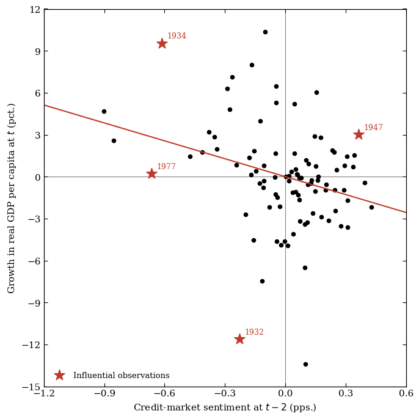

Lopez-Salido, Stein & Zakrajšek (2017): Replication Walkthrough#
Introduction#
Lopez-Salido, Stein, and Zakrajšek (2017, hereafter LSZ) ask whether the mood of the corporate-bond market — not just its level of leverage — helps forecast the business cycle. Their measure of “credit-market sentiment” is a two-year-ahead forecast of the change in the Baa-Treasury credit spread, built from two lagged valuation signals: how narrow the spread already is, and how large a share of new bond issuance is junk-rated. When that forecast says spreads are unusually likely to narrow further (sentiment is elevated and credit is being priced aggressively), real GDP growth over the following two years is significantly weaker than average. The mechanism the paper has in mind is mean reversion: frothy pricing does not last, and when it unwinds, the resulting widening of spreads coincides with a slowdown in activity.
This notebook walks through the part of our codebase that reproduces the paper’s headline exhibits on annual and monthly U.S. data: Figure I (the raw credit spread), Table I (a simple one-step forecasting regression), Table II (the paper’s two-step sentiment regression), and Figure II (a scatter-plot visualization of Table II’s column (1)). We show the code that builds each exhibit, run it live, and compare our numbers against the values printed in the published article.
Throughout, every exhibit is produced twice:
Window |
Sample |
What it answers |
|---|---|---|
Replication |
1929–2015 |
Does our code reproduce the paper’s own numbers? |
Extended |
1929–2025 |
Does the relationship the paper documents still hold once we push the same construction through the most recent available data? |
The code below follows the methodology described in Sections III.A–III.D of
the paper (pp. 1383–1393). We quote from it accordingly as we go. Each script in the repo is a doit task (e.g. doit replicate_table_1) and each emits
both windows below for the paper’s Baa-Treasury spread.
Exhibit |
Paper section / page |
Script |
Output |
|---|---|---|---|
Figure I |
III.A, p. 1384 |
|
|
Table I |
III.B, p. 1386 |
|
|
Table II |
III.C, p. 1389 |
|
|
Figure II |
III.D, p. 1392 |
|
|
Setup#
We import the four replicate_* modules directly — these are the same
modules the doit pipeline calls, so running their functions here is
exactly what happens when doit replicate_* runs, just with
the intermediate objects exposed for inspection.
import sys
from pathlib import Path
import matplotlib.pyplot as plt
import pandas as pd
from IPython.display import Markdown, display
sys.path.insert(0, str(Path.cwd().parent / "src"))
import replicate_figure_1 as f1
import replicate_figure_2 as f2
import replicate_table_1 as t1
import replicate_table_2 as t2
from settings import config
PROCESSED_DATA_DIR = Path(config("PROCESSED_DATA_DIR"))
OUTPUT_DIR = Path(config("OUTPUT_DIR"))
REP_START, REP_END, EXT_END = t1.REP_START, t1.REP_END, t1.EXT_END
print(
f"Replication window: {REP_START}-{REP_END} \nExtended window: {REP_START}-{EXT_END}"
)
def show_tex(path):
"""The raw LaTeX `emit`/`emit_table_2` write to `_output/` -- exactly
what feeds `reports/report.tex` -- as a syntax-highlighted, collapsed-
by-default code block, so it's available without competing with the
rendered table displayed above it."""
display(
Markdown(
f"<details><summary>Raw LaTeX written to <code>{path.name}</code></summary>\n\n"
f"```latex\n{path.read_text()}\n```\n</details>"
)
)
Replication window: 1929-2015
Extended window: 1929-2025
Figure I: The Baa-Treasury Credit Spread#
Figure I is the paper’s opening exhibit and the raw material behind everything else: the spread between Moody’s seasoned Baa-rated industrial bond yield and the 10-year Treasury yield, 1925–2015. The paper’s own description (p. 1383) can be seen below:
“Clearly evident in the figure is the countercyclical nature of credit spreads, with spreads generally widening noticeably in advance of and during economic downturns.”
replicate_figure_1.plot_figure_1 reads the monthly FRED panel and shades NBER
recessions using the hist_recession_indicator column built in
process_fred_data_monthly.py.
monthly = pd.read_parquet(PROCESSED_DATA_DIR / "fred_final_series_monthly.parquet")
fig_rep, spread_rep = f1.plot_figure_1(monthly, f1.BUFFER_START, f1.REP_END)
plt.show()
print(
f"n={len(spread_rep)} months, {spread_rep.index.min().date()} to {spread_rep.index.max().date()}"
)

n=1092 months, 1925-01-01 to 2015-12-01
This matches the printed Figure I closely: the Depression-era spike tops out just above 7 percentage points in 1932, the spread compresses to under 1pp through the mid-1960s “Great Moderation” prelude, and every NBER recession band (shaded) lines up with a local spike (1974-75, the double-dip of the early 1980s, 2001, and the roughly 6pp peak of the 2008–09 financial crisis).
Extended Window#
Pushing the same construction through the most recent available complete year in the underlying FRED data (2025) gives us ten more years to look at.
fig_ext, spread_ext = f1.plot_figure_1(monthly, f1.BUFFER_START, f1.EXT_END)
plt.show()
print(
f"n={len(spread_ext)} months, {spread_ext.index.min().date()} to {spread_ext.index.max().date()}"
)

n=1212 months, 1925-01-01 to 2025-12-01
Three things stand out in the post-2015 tail that weren’t in the original sample:
2020: a very sharp, very short spike (the NBER recession itself lasted only two months, February–April 2020) that is compressed and quickly reversed by aggressive Fed intervention, so it appears as a thin sliver rather than a wide shaded band like 2008–09.
2016: a standalone spread widening around the energy-sector high-yield stress episode that is not flagged as an NBER recession at all. This is a useful reminder that the spread is a noisy signal at the individual-episode level.
2022–2025: a brief widening to just above 2.3pp in mid-2022 as the Fed’s hiking cycle repriced credit risk (again without an NBER recession call in this sample), followed by compression back to around 1.4pp by late 2024 and a modest partial re-widening toward 1.8–1.9pp through 2025 — well short of the 2008–09 or Depression-era peaks.
Table I: Credit Spreads vs. Stock Returns as Growth Predictors#
Definitions#
Code column |
Paper symbol |
Definition |
|---|---|---|
|
\(\Delta y_t\) |
Log-difference of real GDP per capita, year \(t-1\) to \(t\) |
|
\(\Delta s_{t-1}\) |
Change in the Baa-Treasury credit spread over year \(t-1\) |
|
\(r_{t-1}^{SP}\) |
S&P 500 total (price + dividend) log return over year \(t-1\) |
|
\(\Delta y_{t-1}\) |
Lagged control: real GDP-per-capita growth over year \(t-1\) |
|
\(\Delta i_{t-1}^{(3m)}\) |
Change in the 3-month Treasury yield over year \(t-1\) |
|
\(\Delta i_{t-1}^{(10y)}\) |
Change in the 10-year Treasury yield over year \(t-1\) |
|
\(\pi_{t-1}\) |
CPI inflation rate over year \(t-1\) |
|
— |
Regression intercept |
Regressions#
Table I is a simple, one-step warm-up before the paper’s real machinery in Table II. It asks: does last year’s change in the credit spread, or last year’s stock return, forecast this year’s real GDP-per-capita growth? The paper’s regression (equation (1), p. 1387) is the following:
The paper runs this regression 3 times:
Using only the credit spread as the independent variable (\(\Delta s_{t-1}\))
Using only the equity returns as the independent variable (\(r_{t-1}^{SP}\))
Using both together plus rate/inflation control variables (\(\Delta i_{t-1}^{(3m)}\), \(\Delta i_{t-1}^{(10y)}\), \(\pi_{t-1}\)).
Standard errors are Newey-West (HAC), using the Newey and West (1994) automatic bandwidth rule \(\lfloor 4(n/100)^{2/9}\rfloor\).
df1 = t1.build_panel()
df1[["d_credit_spread", "sp_return", "gdp_pc_growth", "dy_next"]].tail().style.format("{:.3f}")
| d_credit_spread | sp_return | gdp_pc_growth | dy_next | |
|---|---|---|---|---|
| year | ||||
| 2021 | -0.400 | 24.795 | 5.771 | 1.939 |
| 2022 | 0.140 | -16.107 | 1.939 | 2.077 |
| 2023 | -0.350 | 19.513 | 2.077 | 1.866 |
| 2024 | -0.210 | 26.157 | 1.866 | 1.542 |
| 2025 | 0.350 | 14.265 | 1.542 | nan |
Column (3) — the paper’s headline specification, where credit and equity
compete head-to-head — is worth looking at directly through statsmodels
before we get to the formatted table:
res_col3 = t1.run_regression(
df1,
[
"d_credit_spread",
"sp_return",
"d_treasury_3mo",
"d_treasury_10yr",
"CPI_inflation",
"gdp_pc_growth",
],
REP_START,
REP_END,
)
print(res_col3.summary())
OLS Regression Results
==============================================================================
Dep. Variable: dy_next R-squared: 0.492
Model: OLS Adj. R-squared: 0.453
Method: Least Squares F-statistic: 19.44
Date: Wed, 19 Aug 2026 Prob (F-statistic): 8.60e-14
Time: 22:03:35 Log-Likelihood: -224.17
No. Observations: 86 AIC: 462.3
Df Residuals: 79 BIC: 479.5
Df Model: 6
Covariance Type: HAC
===================================================================================
coef std err z P>|z| [0.025 0.975]
-----------------------------------------------------------------------------------
const 0.7517 0.473 1.588 0.112 -0.176 1.679
d_credit_spread -2.1236 0.578 -3.674 0.000 -3.256 -0.991
sp_return 0.0217 0.035 0.617 0.537 -0.047 0.090
d_treasury_3mo -0.2483 0.290 -0.857 0.392 -0.816 0.320
d_treasury_10yr -0.8141 0.360 -2.260 0.024 -1.520 -0.108
CPI_inflation 0.0948 0.076 1.242 0.214 -0.055 0.244
gdp_pc_growth 0.4641 0.114 4.064 0.000 0.240 0.688
==============================================================================
Omnibus: 18.620 Durbin-Watson: 1.726
Prob(Omnibus): 0.000 Jarque-Bera (JB): 82.092
Skew: -0.368 Prob(JB): 1.49e-18
Kurtosis: 7.729 Cond. No. 37.9
==============================================================================
Notes:
[1] Standard Errors are heteroscedasticity and autocorrelation robust (HAC) using 3 lags and without small sample correction
replicate_table_1.emit runs all three columns and formats them into a LaTeX
table matching the paper’s layout (coefficients, HAC standard errors,
significance stars) so the
economic size of the credit and equity channels is directly comparable. We call it for both windows, then display each
table.
t1.emit(df1, REP_START, REP_END, "replication")
t1.emit(df1, REP_START, EXT_END, "extended")
display(t1.pretty_table_1(df1, REP_START, REP_END))
display(t1.pretty_table_1(df1, REP_START, EXT_END))
replication: col1 d_s=-1.958, col2 r_sp=0.075, col3 d_s=-2.124/r_sp=0.022 -> table_1_replication.tex
extended: col1 d_s=-1.871, col2 r_sp=0.069, col3 d_s=-2.033/r_sp=0.017 -> table_1_extended.tex
| Dependent variable: Δyt | |||
|---|---|---|---|
| (1) | (2) | (3) | |
| Δst−1 | -1.958*** | --- | -2.124*** |
| (0.585) | (0.578) | ||
| rSPt | --- | 0.075** | 0.022 |
| (0.033) | (0.035) | ||
| Δyt−1 | 0.476*** | 0.478*** | 0.464*** |
| (0.104) | (0.136) | (0.114) | |
| Δit−1(3m) | --- | --- | -0.248 |
| (0.290) | |||
| Δit−1(10y) | --- | --- | -0.814** |
| (0.360) | |||
| πt−1 | --- | --- | 0.095 |
| (0.076) | |||
| Adj. R² | 0.426 | 0.381 | 0.453 |
| Standardized effect on Δyt | |||
| Δst−1 | -0.365 | --- | -0.396 |
| rSPt | --- | 0.299 | 0.087 |
| Dependent variable: Δyt | |||
|---|---|---|---|
| (1) | (2) | (3) | |
| Δst−1 | -1.871*** | --- | -2.033*** |
| (0.566) | (0.571) | ||
| rSPt | --- | 0.069** | 0.017 |
| (0.032) | (0.034) | ||
| Δyt−1 | 0.461*** | 0.465*** | 0.449*** |
| (0.108) | (0.136) | (0.116) | |
| Δit−1(3m) | --- | --- | -0.170 |
| (0.265) | |||
| Δit−1(10y) | --- | --- | -0.776** |
| (0.358) | |||
| πt−1 | --- | --- | 0.089 |
| (0.078) | |||
| Adj. R² | 0.395 | 0.352 | 0.415 |
| Standardized effect on Δyt | |||
| Δst−1 | -0.350 | --- | -0.380 |
| rSPt | --- | 0.283 | 0.068 |
Replication vs. Published vs. Extended#
With the full tables rendered above, we can also pull their headline coefficients into a compact side-by-side comparison against the numbers printed in the paper (Table I, p. 1386):
specs_t1 = {
"(1)": ["d_credit_spread", "gdp_pc_growth"],
"(2)": ["sp_return", "gdp_pc_growth"],
"(3)": [
"d_credit_spread",
"sp_return",
"d_treasury_3mo",
"d_treasury_10yr",
"CPI_inflation",
"gdp_pc_growth",
],
}
res_rep_t1 = {
c: t1.run_regression(df1, r, REP_START, REP_END) for c, r in specs_t1.items()
}
res_ext_t1 = {
c: t1.run_regression(df1, r, REP_START, EXT_END) for c, r in specs_t1.items()
}
# Published QJE Table I, p. 1386.
published_t1 = {
"column 1 Δs<sub>t−1</sub>": -1.997,
"column 2 r<sup>SP</sup><sub>t−1</sub>": 0.081,
"column 3 Δs<sub>t−1</sub>": -2.061,
"column 3 r<sup>SP</sup><sub>t−1</sub>": 0.029,
}
compare_t1 = pd.DataFrame(
{
"Published QJE": published_t1.values(),
"Replication (1929-2015)": [
res_rep_t1["(1)"].params["d_credit_spread"],
res_rep_t1["(2)"].params["sp_return"],
res_rep_t1["(3)"].params["d_credit_spread"],
res_rep_t1["(3)"].params["sp_return"],
],
"Extended (1929-2025)": [
res_ext_t1["(1)"].params["d_credit_spread"],
res_ext_t1["(2)"].params["sp_return"],
res_ext_t1["(3)"].params["d_credit_spread"],
res_ext_t1["(3)"].params["sp_return"],
],
},
index=published_t1.keys(),
)
compare_t1["Diff (Replication - Published)"] = (
compare_t1["Replication (1929-2015)"] - compare_t1["Published QJE"]
)
compare_t1.style.format("{:.3f}")
| Published QJE | Replication (1929-2015) | Extended (1929-2025) | Diff (Replication - Published) | |
|---|---|---|---|---|
| column 1 Δst−1 | -1.997 | -1.958 | -1.871 | 0.039 |
| column 2 rSPt−1 | 0.081 | 0.075 | 0.069 | -0.006 |
| column 3 Δst−1 | -2.061 | -2.124 | -2.033 | -0.063 |
| column 3 rSPt−1 | 0.029 | 0.022 | 0.017 | -0.007 |
Three takeaways:
Column (1) and (2) replicate closely. Credit alone gives us -1.958 vs. the paper’s -1.997; equity alone gives 0.075 vs. 0.081. The small gaps are exactly the kind of thing you’d expect from updated data vintages (FRED and Shiller have both revised and re-benchmarked several of these series since the research was published).
The paper’s headline result in column (3) reproduces. With both predictors in the same regression, the credit-spread coefficient barely moves (-2.124 vs. published -2.061) and stays highly significant, while the equity coefficient collapses toward zero and loses significance - credit beats equities as a growth predictor, exactly as the paper argues.
The extended window tells the same story, slightly attenuated. Every coefficient keeps its sign and rough magnitude through 2025 (credit column (3) comes out to -2.033 vs. -2.124 in the replication window), so the relationship isn’t an artifact of the specific 1929-2015 sample.
Table II: The Two-Step Credit-Sentiment Regression#
Definitions#
Second-step (growth) regressions - dependent variable dy (\(\Delta y_t\), real GDP-per-capita growth in year \(t\)):
Code column |
Paper symbol |
Definition |
|---|---|---|
|
\(\Delta \hat s_t\) |
Fitted change in the credit spread in year \(t\), from the auxiliary spread regression below — the paper’s “credit-market sentiment” |
|
\(\hat r_t^{SP}\) |
Fitted S&P 500 return in year \(t\), from the auxiliary return regression below |
|
\(\Delta y_{t-1}\) |
Lagged real GDP-per-capita growth |
|
\(\Delta i_{t-1}^{(3m)}\) |
Lagged change in the 3-month Treasury yield |
|
\(\Delta i_{t-1}^{(10y)}\) |
Lagged change in the 10-year Treasury yield |
|
\(\pi_{t-1}\) |
Lagged CPI inflation rate |
Auxiliary (first-step) regressions - forecast credit-market sentiment two years ahead:
Code column |
Paper symbol |
Definition |
|---|---|---|
|
\(\Delta s_t\) |
Realized change in the credit spread in year \(t\) |
|
\(\ln \mathrm{HYS}_{t-2}\) |
Log of the high-yield share of bond issuance, two years earlier |
|
\(s_{t-2}\) |
Level of the credit spread, two years earlier |
|
\(r_t^{SP}\) |
Realized S&P 500 total log return in year \(t\) |
|
\(\ln[P/E10]_{t-2}\) |
Log of Shiller’s cyclically adjusted P/E ratio, two years earlier |
d_s_hat and r_sp_hat aren’t raw data — they’re the fitted values from the two auxiliary regressions, substituted into the second-step regression in place of the realized \(\Delta s_t\) and \(r_t^{SP}\).
Regressions#
Table II is the paper’s central exhibit. Instead of using the realized change in the credit spread as a regressor (Table I), it uses a forecast of that change, built two years in advance from lagged valuation signals — this forecast is what the paper calls “credit-market sentiment.” The construction is a two-step regression (equations (2)-(4), p. 1387):
Step 1 (auxiliary regressions, twice-lagged predictors):
Step 2 (growth regression on the fitted values):
Economically, \(\ln \mathrm{HYS}_{t-2}\) is the (log) high-yield share of bond
issuance two years ago, and \(s_{t-2}\) is the level of the spread two years
ago - both from 01_summary_statistics.ipynb’s Greenwood-Hanson and FRED
sections. When issuance quality was low and spreads were already narrow two
years ago, the auxiliary regression predicts spreads will widen this year;
that widening (\(\Delta \hat s_t\)) is what step 2 uses to forecast growth.
build_panel assembles all three source files into one annual panel.
df2 = t2.build_panel()
df2[
["dy", "d_spread", "sp_return", "ln_hys_lag2", "spread_lag2", "ln_pe10_lag2"]
].tail().style.format("{:.3f}")
| dy | d_spread | sp_return | ln_hys_lag2 | spread_lag2 | ln_pe10_lag2 | |
|---|---|---|---|---|---|---|
| year | ||||||
| 2021 | 5.771 | -0.400 | 24.795 | -1.363 | 2.020 | 3.412 |
| 2022 | 1.939 | 0.140 | -16.107 | -1.581 | 2.230 | 3.519 |
| 2023 | 2.077 | -0.350 | 19.513 | -1.220 | 1.830 | 3.646 |
| 2024 | 1.866 | -0.210 | 26.157 | -2.072 | 1.970 | 3.343 |
| 2025 | 1.542 | 0.350 | 14.265 | -1.911 | 1.620 | 3.448 |
run_table_2 fits the two auxiliary regressions and the four second-step
growth columns — (1) spread sentiment
only, (2) equity sentiment only, (3) both, (4) spread sentiment plus
macro controls — and emit_table_2 writes the formatted LaTeX and prints a
diagnostic summary, exactly like the doit replicate_table_2 task does. As
with Table I, we then display each table rendered.
res2_rep = t2.run_table_2(df2, REP_START, REP_END)
t2.emit_table_2(res2_rep, REP_START, REP_END, "replication")
main_rep, aux_rep = t2.pretty_table_2(res2_rep, REP_START, REP_END)
display(main_rep)
display(aux_rep)
replication (1929-2015):
(1) N=84 R2=0.377 d_s_hat=-4.281, dy_lag1=0.597
(2) N=85 R2=0.337 r_sp_hat=0.145, dy_lag1=0.534
(3) N=84 R2=0.380 d_s_hat=-3.861, r_sp_hat=0.053, dy_lag1=0.590
(4) N=84 R2=0.394 d_s_hat=-4.907, dy_lag1=0.581, d_3mo_lag1=0.099, d_10yr_lag1=-0.616, inflation_pct_lag1=0.123
aux Delta s_t: N=84 R2=0.102 ln_hys_lag2=0.147 spread_lag2=-0.245
aux r_t^SP: N=85 R2=0.083 ln_pe10_lag2=-13.171
-> table_2_replication.tex
| Dependent variable: Δyt | ||||
|---|---|---|---|---|
| (1) | (2) | (3) | (4) | |
| Δŝt | -4.281*** | --- | -3.861** | -4.907*** |
| (1.432) | (1.492) | (1.832) | ||
| r̂SPt | --- | 0.145* | 0.053 | --- |
| (0.078) | (0.071) | |||
| Δyt−1 | 0.597*** | 0.534*** | 0.590*** | 0.581*** |
| (0.114) | (0.099) | (0.111) | (0.096) | |
| Δit−1(3m) | --- | --- | --- | 0.099 |
| (0.316) | ||||
| Δit−1(10y) | --- | --- | --- | -0.616 |
| (0.414) | ||||
| πt−1 | --- | --- | --- | 0.123 |
| (0.151) | ||||
| R² | 0.377 | 0.337 | 0.380 | 0.394 |
| Δst | rSPt | |
|---|---|---|
| ln HYSt−2 | 0.147*** | --- |
| (0.042) | ||
| st−2 | -0.245*** | --- |
| (0.047) | ||
| ln[P/E10]t−2 | --- | -0.132*** |
| (0.040) | ||
| R² | 0.102 | 0.083 |
res2_ext = t2.run_table_2(df2, REP_START, EXT_END)
t2.emit_table_2(res2_ext, REP_START, EXT_END, "extended")
main_ext, aux_ext = t2.pretty_table_2(res2_ext, REP_START, EXT_END)
display(main_ext)
display(aux_ext)
extended (1929-2025):
(1) N=94 R2=0.353 d_s_hat=-4.271, dy_lag1=0.577
(2) N=95 R2=0.313 r_sp_hat=0.176, dy_lag1=0.516
(3) N=94 R2=0.356 d_s_hat=-3.884, r_sp_hat=0.068, dy_lag1=0.570
(4) N=94 R2=0.368 d_s_hat=-4.900, dy_lag1=0.559, d_3mo_lag1=0.117, d_10yr_lag1=-0.603, inflation_pct_lag1=0.121
aux Delta s_t: N=94 R2=0.096 ln_hys_lag2=0.130 spread_lag2=-0.244
aux r_t^SP: N=95 R2=0.047 ln_pe10_lag2=-9.090
-> table_2_extended.tex
| Dependent variable: Δyt | ||||
|---|---|---|---|---|
| (1) | (2) | (3) | (4) | |
| Δŝt | -4.271*** | --- | -3.884*** | -4.900*** |
| (1.436) | (1.448) | (1.817) | ||
| r̂SPt | --- | 0.176* | 0.068 | --- |
| (0.105) | (0.088) | |||
| Δyt−1 | 0.577*** | 0.516*** | 0.570*** | 0.559*** |
| (0.117) | (0.103) | (0.114) | (0.099) | |
| Δit−1(3m) | --- | --- | --- | 0.117 |
| (0.288) | ||||
| Δit−1(10y) | --- | --- | --- | -0.603 |
| (0.402) | ||||
| πt−1 | --- | --- | --- | 0.121 |
| (0.151) | ||||
| R² | 0.353 | 0.313 | 0.356 | 0.368 |
| Δst | rSPt | |
|---|---|---|
| ln HYSt−2 | 0.130*** | --- |
| (0.039) | ||
| st−2 | -0.244*** | --- |
| (0.046) | ||
| ln[P/E10]t−2 | --- | -0.091*** |
| (0.035) | ||
| R² | 0.096 | 0.047 |
Replication vs. Published vs. Extended#
With the full tables rendered above, we pull their headline coefficients — both the second-step growth regression and the two first-step auxiliary regressions — into a compact comparison against the paper’s published numbers (Table II, p. 1389):
# Published QJE Table II, p. 1389.
published_t2_main = {
"column 1 Δŝ<sub>t</sub>": -4.800,
"column 2 r̂<sup>SP</sup><sub>t</sub>": 0.145,
"column 3 Δŝ<sub>t</sub>": -4.409,
"column 3 r̂<sup>SP</sup><sub>t</sub>": 0.069,
"column 4 Δŝ<sub>t</sub>": -5.389,
}
compare_t2_main = pd.DataFrame(
{
"Published QJE": published_t2_main.values(),
"Replication (1929-2015)": [
res2_rep["col1"].params["d_s_hat"],
res2_rep["col2"].params["r_sp_hat"],
res2_rep["col3"].params["d_s_hat"],
res2_rep["col3"].params["r_sp_hat"],
res2_rep["col4"].params["d_s_hat"],
],
"Extended (1929-2025)": [
res2_ext["col1"].params["d_s_hat"],
res2_ext["col2"].params["r_sp_hat"],
res2_ext["col3"].params["d_s_hat"],
res2_ext["col3"].params["r_sp_hat"],
res2_ext["col4"].params["d_s_hat"],
],
},
index=published_t2_main.keys(),
)
compare_t2_main["Diff (Replication - Published)"] = (
compare_t2_main["Replication (1929-2015)"] - compare_t2_main["Published QJE"]
)
print("Second-step (growth) regression:")
compare_t2_main.style.format("{:.3f}")
# Published QJE Table II auxiliary regressions, p. 1389.
# ln[P/E10]_{t-2}'s fitted coefficient is ~100x the paper's display convention
# (see the `_AUX_ROWS` comment in replicate_table_2.py); we apply the same 0.01
# display rescaling here for a fair comparison.
published_t2_aux = {
"ln HYS<sub>t−2</sub>": 0.095,
"s<sub>t−2</sub>": -0.248,
"ln[P/E10]<sub>t−2</sub>": -0.134,
}
compare_t2_aux = pd.DataFrame(
{
"Published QJE": published_t2_aux.values(),
"Replication (1929-2015)": [
res2_rep["aux_spread"].params["ln_hys_lag2"],
res2_rep["aux_spread"].params["spread_lag2"],
res2_rep["aux_return"].params["ln_pe10_lag2"] * 0.01,
],
"Extended (1929-2025)": [
res2_ext["aux_spread"].params["ln_hys_lag2"],
res2_ext["aux_spread"].params["spread_lag2"],
res2_ext["aux_return"].params["ln_pe10_lag2"] * 0.01,
],
},
index=published_t2_aux.keys(),
)
compare_t2_aux["Diff (Replication - Published)"] = (
compare_t2_aux["Replication (1929-2015)"] - compare_t2_aux["Published QJE"]
)
print("\nFirst-step (auxiliary) regressions:")
compare_t2_aux.style.format("{:.3f}")
Second-step (growth) regression:
First-step (auxiliary) regressions:
| Published QJE | Replication (1929-2015) | Extended (1929-2025) | Diff (Replication - Published) | |
|---|---|---|---|---|
| ln HYSt−2 | 0.095 | 0.147 | 0.130 | 0.052 |
| st−2 | -0.248 | -0.245 | -0.244 | 0.003 |
| ln[P/E10]t−2 | -0.134 | -0.132 | -0.091 | 0.002 |
Three takeaways:
Column (2) is essentially exact: 0.145 in both the paper and our replication. Column (1)’s credit-sentiment coefficient (-4.281 vs. published -4.800) and column (4) (-4.907 vs. -5.389) are within about 10% — same sign, same order of magnitude, same conclusion (credit-market sentiment two years ago has a large, negative, statistically significant effect on growth today).
The auxiliary regressions confirm the mechanism: \(s_{t-2}\) predicts mean reversion in the spread almost exactly as published (-0.245 vs. -0.248), and \(\ln[P/E10]_{t-2}\)’s coefficient (-0.132) sits right on top of the paper’s -0.134. \(\ln \mathrm{HYS}_{t-2}\) is the one meaningfully different auxiliary coefficient (0.147 vs. published 0.095). In this case, the Greenwood-Hanson high-yield share we pull is a newer, revised vintage of that series than the one the authors used in 2017, which is the most likely source of this gap.
The extended window changes very little in the main regression (column (1) results in -4.271 vs. -4.281), but the equity-sentiment auxiliary regression’s \(R^2\) drops noticeably (0.083 → 0.047, and its coefficient from -0.132 to -0.091) — CAPE became a weaker within-sample predictor of next-year equity returns once the low-rate, high-valuation 2016-2025 era is folded in, a pattern consistent with well-documented critiques of Shiller CAPE’s predictive power in this more recent period.
Figure II: Credit-Market Sentiment and Growth#
Figure II (p. 1392) is a visualization of Table II’s column (1): it plots credit-market sentiment at \(t-2\) against real GDP-per-capita growth at \(t\), both orthogonalized against column (1)’s other regressor (\(\Delta y_{t-1}\)), with the fitted line’s slope equal to column (1)’s \(\beta\) on \(\Delta \hat s_t\).
replicate_figure_2.orthogonalize implements this. The paper also flags a handful of
“influential observations” and so does find_influential, using the same rule the paper
applies in its own Figure III discussion (p. 1393).
fig2_rep = f2.plot_figure_2(df2, REP_START, REP_END)
plt.show()

Compared with the printed Figure II, the negative slope, the spread of points, and even the specific years flagged as influential are all a close match — the paper calls out 1932, 1934, and 1977 as its three most influential observations; our replication flags those same three, plus a fourth, 1947. This extra flagged year is most likely a data-vintage artifact rather than a methodology difference. It’s a good example of a “close but not pixel-identical” replication result, and worth naming rather than papering over.
Extended Window#
fig2_ext = f2.plot_figure_2(df2, REP_START, EXT_END)
plt.show()

Visually the two figures are nearly indistinguishable — most of the ten additional (2016-2025) points cluster close to the origin on both axes, consistent with the muted post-2015 spread swings we saw in the extended Figure I. We can make the “nearly indistinguishable” claim concrete rather than just visual:
beta_rep = res2_rep["col1"].params["d_s_hat"]
beta_ext = res2_ext["col1"].params["d_s_hat"]
infl_rep = sorted(f2.find_influential(res2_rep["col1"], "d_s_hat"))
infl_ext = sorted(f2.find_influential(res2_ext["col1"], "d_s_hat"))
print(f"Fitted slope, replication window: {beta_rep:.3f}")
print(f"Fitted slope, extended window: {beta_ext:.3f}")
print(f"Influential years, replication window: {infl_rep}")
print(f"Influential years, extended window: {infl_ext}")
print("Same influential years in both windows:", infl_rep == infl_ext)
Fitted slope, replication window: -4.281
Fitted slope, extended window: -4.271
Influential years, replication window: [1932, 1934, 1947, 1977]
Influential years, extended window: [1932, 1934, 1947, 1977]
Same influential years in both windows: True
The fitted slope moves by less than 0.3%, and the same four years remain the influential ones — no observation from 2016-2025, including the extreme 2020 pandemic growth print, crosses the cutoff to be considered an influential observation. That’s a meaningful robustness result on its own: even the sharpest GDP shock in the extended sample doesn’t look unusual once we condition on the credit-sentiment/growth relationship the paper documents — it’s a big move in \(y\), but not a big surprise relative to what credit-market sentiment two years earlier and last year’s growth already implied.
Summary#
Exhibit |
Replicates published paper? |
Holds up through 2025? |
|---|---|---|
Figure I |
Yes, recession-timed spikes match at every date, exact prefix match with the extended series |
Yes, same pattern continues, with a sharp-but-brief 2020 spike and a 2022 widening that fades by 2024 |
Table I |
Yes, closely — column 3’s “credit beats equities” result reproduces (credit stays significant, equity collapses) |
Yes, with mild attenuation (credit coefficient -2.124 → -2.033) |
Table II |
Yes, especially column 2 (0.145 vs. published 0.145) and the auxiliary \(s_{t-2}\)/\(\ln[P/E10]_{t-2}\) rows; columns 1 and 4 within ~10% |
Yes, the main coefficients nearly unchanged; CAPE’s auxiliary predictive power weakens noticeably |
Figure II |
Yes, same slope, same three published influential years plus one data-vintage-driven fourth (1947) |
Yes, fitted slope and influential year set both essentially unchanged |
Across all four exhibits, our replication of Lopez-Salido, Stein & Zakrajšek (2017) using the Baa-Treasury spread reproduces the paper’s central claim - that elevated credit-market sentiment two years prior forecasts materially weaker subsequent growth. We see this in both the original 1929-2015 sample and after extending the same construction through 2025. The remaining gaps from the published numbers are small.